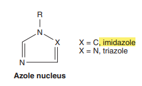

→ Amphotericin B
- first efficacious antifugnal drug available for systemic use
- quite toxic
→ then introduction of "nontoxic" azoles.
- oral and parenteral formulation
→ and the echinocandins
- parenteral admin.
→ Categories:
- systemic drugs ( oral and parenteral ) for systemic infenctions
- oral systemic drugs for mucocutaneous infenctions
- topical drugs for mucocutaneous infenctions.
→ Amphotericin B
→ A and B are antifungal antibiotics produced by Streptomyces nodosus.
- Amphotericin B is not in clinical use.
→ B = amphoteric polyene macrolide
- [ polyene = containing many double bonds ] - [ macrolides = containing a large lactone ring of 12 or more atoms ]
- insoluble in water => collodial suspensions and sodium desocycholate for intravenous injections.
- oral admin. is effective only on fungu within the lumen of the tract/
→ excreted slowly in the urine over a period of several days.
→ serum half-life 15 days.
Mechanism of Action & Resistance:
→ selective , fungicidal effect
- eploits the differecne in lipid composition of fungal and mammalian cell membrances.
→ Ergosterol (cell membranes sterol)
- amphotericin B is bind to ergosterol and alerts permability of the cell by forming amphotericin B associated pores in the cell membrane.
→ avidly combine with lipids (ergosterol) along the double bond-rich side of its structure and associatse with water molecules along the hydroxy-rich side.
- amphipathetic characterists facilitates pore formation[lipophilic portion around the outside ]-[hydrophilic regions lining the inside]
- allows the leakgage of intracellular ions and macromolecule → leadin to cell deaths.
- by decreasing the membrane concentrantion of ergosterol
- modifying the sterol target molecule to reduce its affinity for the drug
Antifungal Activity & Clinical Uses:
→ the broadest spectrum of action.
→ activity against significant yeasts
- Candida albicans
- Cryptococcus neoformans
- Histoplasma capsulatum
- Blastomyces dermatitis
- Coccidiodes immitis
- Candida lusitaniae
- Pseudallescheria boydii
→ rapidly reduce fugnal burden and then replaced with some newer azole.
- severe fungal pneumonia,severe cryptococcal menigitis
→ Local or Topical admin.
- mycotic corneal ulcers
- keratitis
Adverse effects:
→ two types of reactions
- immediate ( related to the infusion of the drug)
- more slowly
→ abnormalities of liver function occasionally seen (as in a varying form of anemia)
Flucytosine
→ potent antifugnal agents
→ water-soluble pyrimidine analog related to the chemotherapeutic agent 5-flurouracil (5-FU)
→ narrowest spectrum than that of amphotericin B
→ only in an oral formulation
→ dosage : 100-150 mg/kg/d
→ absorbed (>90%)
→ poorly protein bound
→ glomerular filtration with a half-life 3-4 hours.
→ levels rise rapidly with renal impairment and can lead to toxicity
Mechansm of Action & Resistance:
→ taken up by fungal cells via the enzyme cytosine permase
- converted intracellularly first to 5-FU
- and then to 5-flurodeoxyuridine monophosphate and fluorouidine triphosphate
→ humman cells are unable to convert the parent drug to its active metabolites, resulting in selective toxicity
→ synergy with amphotericin B
- and azole
- develops rapidly in the course of flucytosine monotherapy.
Clinical Uses & Adverse Effects:
→ spectrum of activity restricted to
- C.neoformans
- some Candidass species
- dematiaceous molds that cause chromoblastomycosis.
- with amphotericin B for cryptococcal menigitis
- itraconazole for chromoblastomycosis.
AZOLES
Chemistry&Kinetics
→ synthetic compounds that can be classified:
- imidazoles ⇒ [Ketoconazole , Miconazole , Clotrimazole ] → the latter two drugs are used only in TOPICAL THERAPY
- triazoles ⇒ [Itraconazole , Fluconazole, Voriconazole, Posaconazole]

→ pharmacology of each is unique.
Mechanisms of Actions & Resistance:
→ reduction of ergosterol synthesis by inhibition of fungal cytochrome P450 enzymes.
→ greater affinity for fugnal than for human cytochrome
→ Imidazoles lesser degree of selectivity than the triazoles
- higher incidence of drug interactions and adverse effects.
Clinical Uses,Adverse Effects & Drug Interaction:
→ spectume is broad
- Candida,C.neoformans
- blastomycosis, coccidiooidomycosis, histoplasmosis
→ in the case of itraconazole,voriconazole → Aspergillus infenctions.
→ also useful in the treatment of amphoterecin-recistance organism such as P.boydii.
→ relative non toxic [ minor GIT upsets ]
Ketoconazole:
→ first oral azole.
→ distinguished by triazoles by its greater propensity to inhibit mamalian cytochrome P450 enyzmes.
- less effective for fungal P450.
Itraconazole:
→ oral and intravenous fomrulation
- dosage : 100-400 mg/d
→ lipid-soluble azoles → interacts with hepatic microsomal enzymes ( lesser degree than ketoconazole)
→ ↓ bioavailability of itraconazole when taken with rifamycins.
- ( rifampin , rifabutin , rifapentine )
→ oral liquid, intravenous preparations ( with cyclodextran as a carrier molecule to ↑ solubility and bioavailability )
→ poorly penatrates into the cerebrospinal fluid.
→ Histoplasma,Blastomyces,Sporthrix
→ used extensively in the treatment of dermataophytoses onychomycosis.
Fluconazole:
→ high degree of water solublity and good cerebrospinal fluid penatration.
→ oral bioavailability is high
→ least effect of all the azoles on hepatic microsomal enzymes
→ widest therapeutic index of the azoles
- permiting more aggresive dosing in a variety of fungal infecntios.
- dosage : 100-800 mg/d.
→ treatment of mucocutaneous candidiasis.
→ profilactic use of fluconazole
- ↓ fungal disease in bone marrow transplant recipients and aids patients
- emergence of fluconazole-resistance fungi has raised concerns about this indication.
Voriconazole:
→ intravenous and oral formulation
→ 400 mg/d
→ well absorbed orally ( bioavailability exceeding 90%)
→ less protein binding than itracoanzole.
→ hepatic metabolism
→ relevant inhibitor of mamalian CYP3A4
- doso of medications should be reducted when voriconazole is s tarted.
→ rash and elevated hepatic enzymes
- visual distrubances
- photosensitivity demratitis
→ less toxic than amphotericin B
→ choice of treatment for invasive aspergillosis.
Posaconazole:
→ newst "triazole"
→ only in liquid oral formulation
- dosage : 800 mg/d , devided into two or three doses
→ rapidly distributed to the tissues → high tissue levels but low blood levels
→ CYP3A4 substrates such as : ( tracrolimus , cyclosporine )
→ broadest spectrum member of azole
→ Candida & Aspergillus
→ mucormycosis
→ salvage therapy in invasive aspergillosis
→ prophylaxis of fugnal infections during induction chemotherapy for leukemia.
Echinocandids
Chemistry and Kinetics :
→ newest class of anti-fugnal agents
→ large c yclic peptides linked to a long-chain fatty acids.
→ Caspfungin, micafugin , anidulafungin
→ Candida and Aspergillus
→ Only in intravenous formulations
→ Caspofungin
- single dose of 70mg followed by daily dose of 50mg
- water-soluble & highly-protein bound.
- half-life is 9-11 hours
- excreted by the kidneys and GIT
- dosa adjustment required in case of hepatic impairment.
- half-lifef 11-15hours
- dose of 150 mg/d → esophageal candidiasis
- dose of 100 mg/d → candidemia
- dose of 50 m g/d → prophylaxis of fungal infenction
→ Anidulafungin
- half-life 24-48 hours → esophageal candidiasis
- single dose of 100 mg/d and 50 mg/d for 14 days.
Mechanism of action:
→ act at the level of the fungal cell wall by inhibiting the synthesis of β(1-3)-glucan
- results in disruption of the f ungal cell wall and cell death
Clinic Uses & Adverse Effects:
→ Capsofungin
- disseminated and mucocutaneus candidal infenction
- empiric antifugnal therapy during febrile neutropenia
→ Micafungin
- mucocutaneus candidiasis
- candidemia
- prophylaxis of candidal infenctions in bone marrow transplant patients.
- increase levels of nifedipine, cyclosporine , sirolimus
→ Anidulafungin
- esophageal candidiasis
- invasive candidiasis , including ( candidemia )
- does not shown any significant drug interanction.
→ Echinocandin agents:
- extremely well tolarated
- minor GIT side effects and flushing.
- elavated liver enzymes when it is combined with cyclosporine.
ORAL SYSTEMIC ANTIFUNGAL DRUGS FOR MUCOCUTANEOUS INFENCTIONS:
Griseofulvin
→ very insoluble fungiastatic drug from species of penicillium.
→ systemic treatment of dermatophytosis.
→ admin. in a microcrystalline form at a dosage of 1g/d.
→ absortption is improved when it is given with fatty foods.
→ moa at cellular level is unclear
- deposited in newly forming skin where it binds to keratin (protecting the sking from new infenction)
- admin. 2-6 week for skin/hair infenctions (allow replacement of infected keratin by the resisatant structures)
- Nail infenctions → therapy for monhts
- allergic syndrome like ( serum sickness , hepatitits )
- drug interanctions with — warfarin — phenobarbital
Terbinafine
→ synthetic allylamine in ORAL formulation
- dosage : 250 mg/d → dermatophytoses , especially onychomycosis.
- keratophillic medication & fungicidical
- interefers with ergosterol biosynthesis
- inhibiting enzyme " squalene epoxidase "
- which leads to mulation of the sterol squalene which is toxic to organism.
→ GIT upset & headache
TOPICAL ANTIFUGNAL THERAPY
Nystatin
→ polyene macrolide much like amphotericin B
- too toxic for parenteral admin and is only used topically.
- creams
- oitments
- suppositories
- and other for mucus membranes & skin
→ oral admin. is often limited due to bad taste
→ Candida sp
- suppression of local candidal infenctions
- oropharyngeal thrush
- vaginal candidiasis
- intertriginous candidal infenctions
TOPICAL AZOLES DERIVATIVES
→ Clotrimazole & Miconazole & Econazole & Oxiconazole & Ketokonazole etc
- cream/lotion/vaginal cream or supp/tablets
- vulvovaginal candidiasis
- oral thrush
- pleasant-tasting alternative to nystatin
- dermatmophytic infenctions
- tinea corporis
- tinea pedis
- tinea cruris
→ topical and shampoo forms of ketoconazole are also available
- seborrheic dermatitits and pityriasis versicolor
Ciclopirox olamin
→ synthetic broad-spectrum antimycotic agent
- inhibitory acticity against → dermatophytes , candida species , P.orbiculare
→ 1% cream and lotions (Loprox)
- dermatomycosis
- candidiasis
- tinea versicolor
- mild to moderate onychomycosis of fingernails and toeanails.
TOPICAL ALLYLAMINES
→ Terbinafine and naftitine
- highly active against dermatophytes
- less active against yeast
→ 1% topical creams
- tinea cruris
- tinea corporis
{kind=link}
{kind=link}